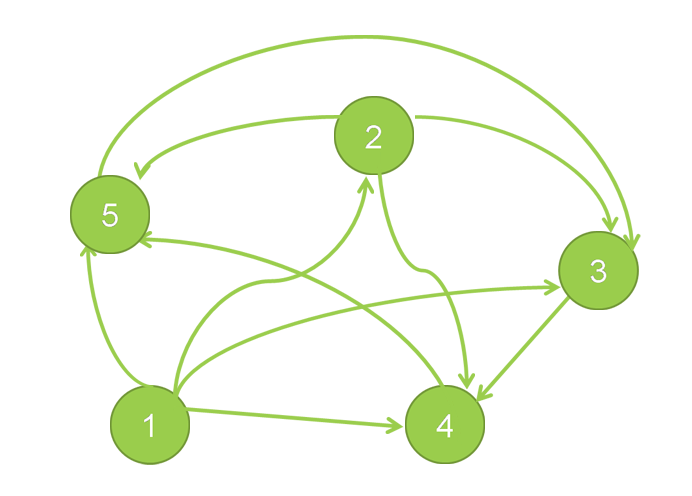

O alta modalitate de reprezentare o constituie listele de vecini. Spre deosebire de matricea de adiacenta aceasta se foloseste pentru a reduce consumul de memorie si de timp. Aceasta consta in - Pentru fiecare varf u ∈ {1, 2, 3, ..., n}:
- se precizeaza gradul exterior ( d+(u) )
- se precizeaza multimea succesorilor lui
u ( Γ +(u) )
- se precizeaza pentru fiecare succesor, costul arcului respectiv
Practic acestea se retin sub forma unui tablou bidimensional A, cu doua campuri: unul pentru varfuri de adiacenta(v) si altul pentru costul muchiei respective(c). Mai exact pentru fiecare linie i, A[i][0].v reprezinta d+(u) , iar elementele A[i][j].v 1≤ j ≤ A[i][0].v succesori lui i, respectiv A[i][j].c
(1 ≤ j ≤ A[i][0].v) reprezinta costul arcului (i, j) .
In cazul unui graf care nu este ponderat, avem nevoie de o matrice cu un singur camp, cel cu varfuri/noduri de adiacenta.
Spre exemplu, matricea corespunzatoare grafului din figura de mai jos:
| |
0 |
1 |
2 |
3 |
4 |
| 1.v |
4 |
2 |
3 |
4 |
5 |
| 1.c |
0 |
8 |
11 |
15 |
4 |
| 2.v |
3 |
3 |
4 |
5 |
| 2.c |
0 |
3 |
9 |
1 |
| 3.v |
1 |
4 |
| 3.c |
0 |
2 |
| 4.v |
1 |
5 |
| 4.c |
0 |
6 |
| 5.v |
1 |
3 |
| 5.c |
0 |
2 |
In mod informal, notiunea de vector, face referire la un tablou unidimensional. Vectorul de tati este un tablou in care putem retine un arbore. Acesta memoreaza parintii(tatii, predecesorii) nodurilor arborelui. Astfel pentru un arbore cu n noduri, Tata[i] reprezinta predecesorul nodului i cu i = 1, 2, 3, ..., n. Neexistand un parinte al radacinii x, vom lua Tata[x]=0. De exemplu, pentru arborele din figura, vectorul de tati este: